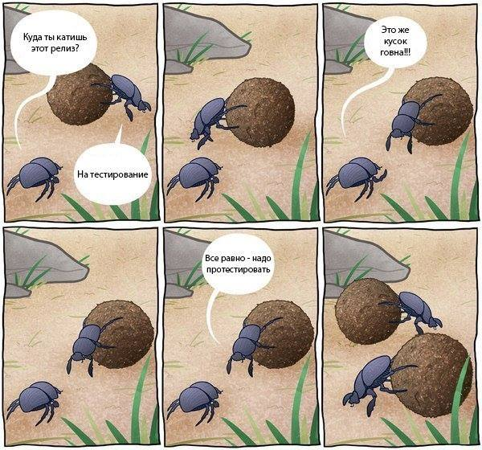

Who I am
- Katrusha Andrey
- Junior Fullstack developer
- @kaflan
- Node.js, Vanilla.js, Angular.js, MongoDB
- Сheese sommelier
What is important in this picture

What to Choose For Acceptance Testing?
- Selenium Webdriver JS
- Webdriverio
- Protractor
- Intern
- Nightmare
- PhantomJS
Different Bindings
.init()
.url('https://localhost/')
.setValue('input[name=login], 'john')
.setValue('input[name=password], '123456')
.click('input[type=submit]')
.getText('.welcome').then(function(text) {
return assert(text, 'Welcome');
});
Different APIs
driver.get('http://localhost/');
driver.findElement(protractor.By.name('login'))
.sendKeys('john');
driver.findElement(protractor.By.name('password'))
.sendKeys(‘123456’);
CodeceptJS
One framework soft syntax
Synchronous (not really, uses global promise)
Scenario Driven(easy to readand write test, like cucumber)
With PageObjects, Interactive Shell, Error output.
Test simple
Scenario('log in as user', (I) => {
I.amOnPage('/');
I.click('Login');
I.fillField('Username', 'john');
I.fillField('Password', '123456');
I.click('Enter');
I.see('Welcome');
}
Scenario Driven: executed step by step
- I am on page ‘/’
- I fill field ‘Username’, ‘john’
- I fill field ‘Password’, ‘123456’
- I click ‘Enter’
- I see ‘Welcome’
Smart Locators
- By label
- By name
- By CSS
- By XPath
- By strict {css: ‘.user’}
I.wait(sec)
I.waitForElement(sec, selector)
I.waitForText('Thank you, form has been submitted');
I.waitForText('Thank you, form has been submitted',
5, '#modal');
Test interactive shell
Scenario('log in as user', (I) => {
I.amOnPage('/');
I.click('Login');
I.fillField('Username', 'john');
pause()
I.click('Enter');
I.see('Welcome');
}
PageObject, StepObject, PageFragment
Scenario('log in as user', (I, loginPage) => {
loginPage.logInWith('john', '123456');
I.see('Welcome');
More
- Based on Mocha testing framework
- Designed for scenario driven acceptance testing in BDD-style
- Uses ES6 natively without transpiler.
- Selenium WebDriver integration using webdriverio (..Protractor, Nigthmare)
- Easily create tests, pageobjects, stepobjects with CLI generators.
Try CodeceptJS today!.. and ask your questions
- http://codecept.io
- npm install -g codeceptjs
- @codeceptjs
- Andrey Katrusha @kaflan
Powered by Shower